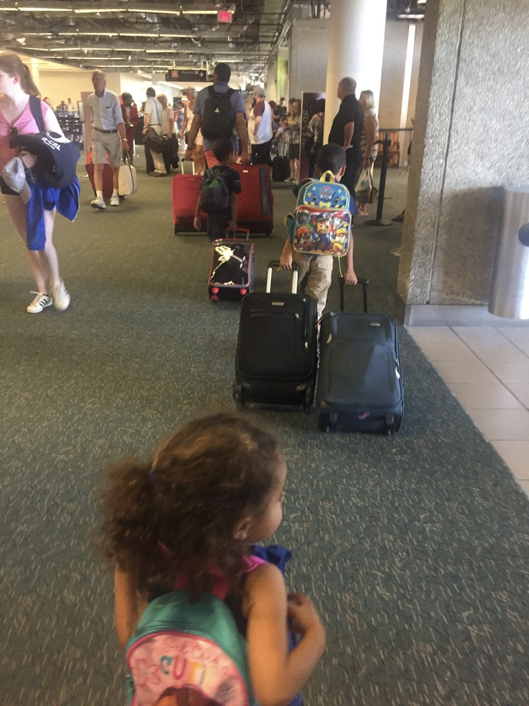
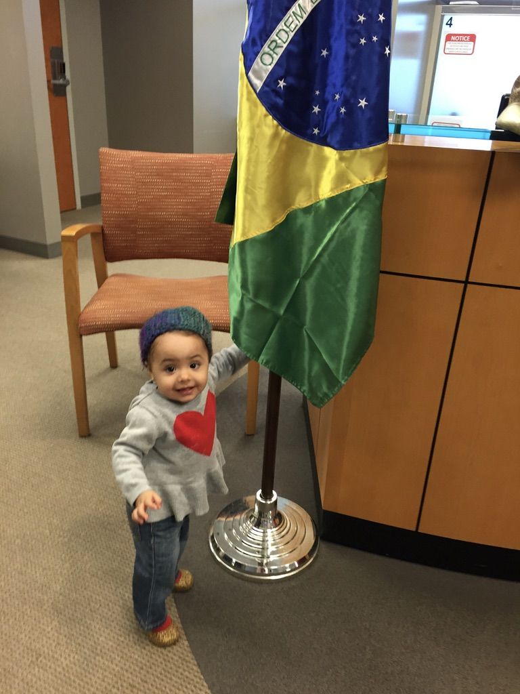
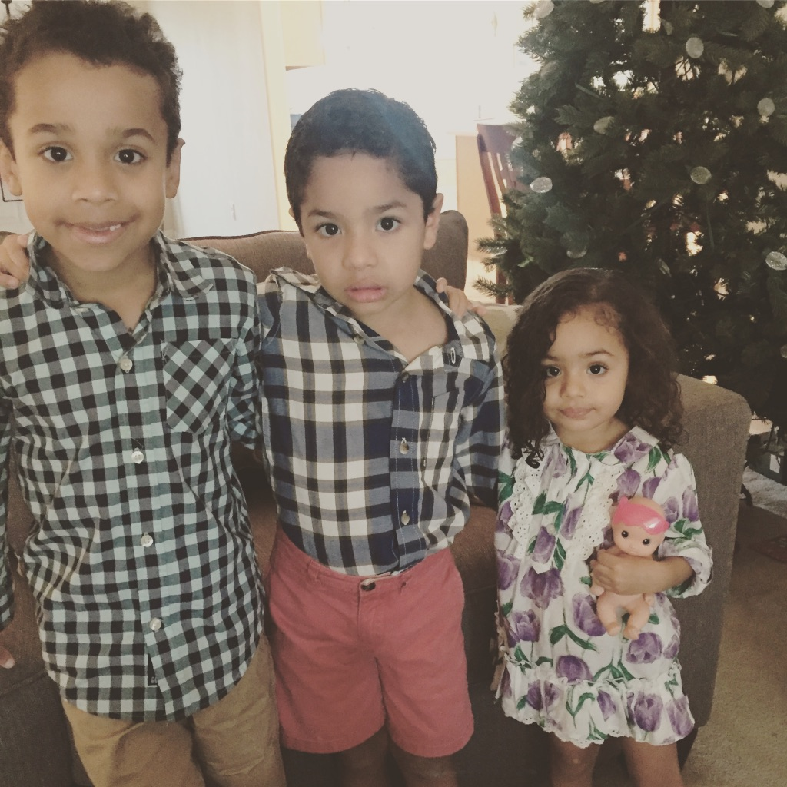

In life, we sometimes have to say goodbye to different situations. This post is about how my life as an expatriate has
tought me to be able to say goodbye.
How is to have three children in three different countries? In this post you'll read about my experience on this.
Closing Chapters
You do not need to go abroad to say goodbye to something or someone.
In many situations of our life we have to make decisions that involve finishing or changing something.
Few things are more difficult than closing chapters in our lives. However, do it
It allows us to create new stories and new experiences that will form our book of life.
It is common that without realizing it, instead of writing new chapters, we do not stop reading the same
page because we do not want to let go of the past or simply the routine, comfort zone or that "bubble"
in which we live does not allow us to write new stories.

Fig.1 My family in our last move
As of today, life has given me the opportunity to close many chapters of my life with great memories and experiences from failures and difficulties.
This has meant 4 changes of country or city, 4 times to pack and unpack changes, 4 times to start again.
Four chapters that not only required courage to start them, but also will.
However brave we are, nothing happens without will.
I still remember when friends and family told me before going to Argentina, "You are very brave to go to live in an unknown country".
At that moment, I thought Yes that maybe I was very brave. But when I arrived in Argentina I realized that I did not need to be brave to live there.
It did not take me long to realize that all I needed was a will. Brave is the one who faces danger.
Brave would be the one who goes to live in a war zone. I was not in any danger.
On the contrary, I was only in a new city initiating a change in my life in which I only needed my will to face it and learn from it.
Not only living abroad is a big change. Marriage, some illness, loss of a loved one, change of job,
They are also great changes, which really change your life and are usually accompanied by difficult situations that shake it.
But definitely, when a change is a great challenge, it is not the end of the world, it is the beginning of a new chapter that will soon be part of your book of life.
Each move has not only involved selling and buying. Each move has taught us that we should only accumulate
in our heart, memories and experiences. From each move we have taken challenges, mistakes, follies, but above all
friendships, apprenticeships, and affection for countries that gave us the opportunity to live new and great experiences and
form a new chapter. Give a touch of madness to your life and turn that page where you have stayed so long.
"To say goodbye is to grow." (Gustavo Cerati)
Thanks for reading me!
How to raise happy children abroad with strong ties to their extended family (grandparents, uncles, cousins, etc.)?
If you are expat with small children you will be familiar with the image of your 8-month-old son crying when the visiting
grandparents arrive and they try to take him in their arms. This can be difficult for everyone in the family and an effort
is needed to create that important link despite the distance. As expats we have an ally called "technology".
The technological advances have allowed that today we can make calls and virtual talks at any time. In fact, I can not
imagine what it would be like for an expat without technology and even without social networks. But I think the issue of
the expatriate with technology deserves another post. Today I would like to talk about what my eldest son has learned by
living practically all his life abroad but above all what he has taught me.
Santiago was born more than 5 years ago in the city of Monterrey, N.L., Mexico. After 2 months, he began his expatriate
life in Argentina. From there, his life has been joined by 4 countries, 5 different cities, more than 20 international
flights, 5 schools (Argentina 1, Brazil 2, EUA 2) and endless adventures. Regardless of the languages he has learned,
as an expat child, Santiago has learned other, much more important things.
He has lived in Monterrey, NL (Mex), Buenos Aires, B.A. (Arg), Joinville, SC (Bra), Maryville, TN (USA) and currently lives
in a city called Rockledge, FL, just 30 minutes from Orlando, FL (USA). Of all these cities you know which is your favorite
city and where he would like to live forever? MONTERREY! Still and today lives 30 minutes from DISNEY! Anyone could think that
the dream of every child is to be a neighbor of Mickey Mouse! But even though he only lived his first 2 months of life there,
his answer is still Monterrey. The reason is simple: because their grandparents, cousins, uncles, aunts, etc. live there. and
he receives a lot of love and time of coexistence when he visits them.
Fig.1 Santiago, my oldest son
During his last birthday, one of the gifts I gave him was a video where his grandparents, uncles, cousins and his Mexican family
from Brazil sent him greetings. I never imagined that the video would move him so much. When he saw it, his face fell apart and
his eyes shrieked with nostalgia and longing for wanting to celebrate his birthday with all those people he wants but could only
see through that video. Only to see his face of happiness but at the same time of nostalgia, I got a lump in my throat because I
knew that my son wanted to celebrate his birthday with all of them. When I asked him if he liked it, he said "Thank you, mamãe,
the video was my best gift."
At that moment I realized that Santiago had learned to value family and that the best gifts do not have to be material things.
Sometimes we go out of our way to give them toys or we worry about having the fashion toy but the reality is that they are happy
with the love of their family.
At his young age, Santiago has also learned to be strong. During the first visits we made to Monterrey or when grandparents visited
us at home, there were always tears in the farewells. He even questioned me why he could not live near his grandparents like all the
children in his school. For Santiago, it was difficult to accept that his mother and father attended the celebrations of the day of
the grandfather in his school.
However, one day while returning to the United States after a visit to Monterrey, I asked him why he was not crying anymore and with
that innocence he replied: "I'm sad but even though we cry, we'll get on the plane!" He got used to goodbyes? Maybe, but in that
moment I understood that Santiago was learning to cope with his sorrows, to be strong and to accept what life presents him.
It is also amazing how after the visits, he returns to his happy daily life without any problem.
With this he has taught me that everyone is responsible for their own happiness and that there must be a balance between creating ties
and knowing how to get rid of memories or some material good.
Life allowed me to be a mother three times in three different countries.
If you are pregnant with your first baby or if you already had a child, you will agree with me that there is a lot of uncertainty about
what this great day will be like. Living pregnancies in 3 different countries allowed me to feel that uncertainty 3 times, but above all,
to verify that in maternity, NOTHING is right or wrong. Simply, each mother must choose the upbringing of her children.
AND THAT will be fine for them.
My first baby was born by cesarean section in Monterrey, Mexico. City where more than 60% of babies are born by caesarean section.
Mind you, I am not against cesarean births (I have 3 perfectly healthy children born by caesarean section). Simply, life showed me
the reality in other countries.

Fig.1 My daughter Luciana, that was born in Brazil
When the big day came that I became a mother, it was probably similar to that of many women in Mexico who are blessed to have access
to private services. Santiago was born at 8:25 am, they took me to the recovery room and the baby to the nursery area.
By noon, in my room already decorated were family, aunts, friends, ready to show their affection and meet our baby (always grateful for
those displays of love!).
Even with the typical problems of a new mother, I started breastfeeding. However, the third month believing that my baby "did not fill"
we started with the formula. Just in that third month began our life as expatriates in Argentina. I still remember, when we went to the
pediatrician, and the Argentine doctor, he tells me, does the baby take mother's milk right? When I answered that NO, surprised but at
the same time almost confirming, he questioned me if I had suffered any illness or any kind of problem that prevented me from doing it.
It was at that moment that I realized that we had moved to a country where breastfeeding is much more driven than in our country.
Wherever you walk, you can find mothers breastfeeding without any shame. Clarifying that I do not tell exhibitionists to my Argentine
friends, but I could see mothers feeding their children in the park, in the restaurant, in the doctor's office, even in the supermarket!
Some covering more than others but nobody makes morbid about it. Simply, in Argentina it is something beautifully NATURAL!
While for me in Monterrey it was not (at least 5 years ago) and breastfeed in public or think about it.
In Monterrey, if you are in a meeting and your baby happens to want to eat. If you are lucky, it will not take long for someone to kindly
tell you that you can safely move to another room so that you feel comfortable. In the best case, or in cases of more confidence, the
mother takes out her "blanket" to cover herself and feed the baby.
After enjoying our first baby for 20 months, we once again enjoyed the news of the arrival of a second child. We had decided to be born
there in Argentina. From the care of the pregnancy that the doctors give to the mothers I realized that this second pregnancy would be
very different.
No good!! We left my husband and I thinking we should find another doctor. How was it possible that an obstetrician did not have ultrasound
equipment? If my obstetrician in Mexico had a team up in 3D and month to month for 9 months we would see the baby on an LCD screen and every
appointment we went out with CD in hand !!

Fig.2 Santiago, Juan Pablo and Luciana
Soon we had the contact of one of the most recognized obstetricians in the city of Buenos Aires and we decided to change doctors.
What was our surprise that this doctor also did not have ultrasound equipment in his office !! We realized that in Argentina, ultrasound
scans are not performed every month and, in addition, they are not performed by the obstetrician. The sonographer performs the ones that
are necessary and perform them in 3D or 4D is not so common. After 9 months the time of birth had arrived. I was feeling more nervous than
with my first baby. How will the Argentine doctors do the surgery?
"The baby is perfect, they told me that he could stay with us". my husband told me. Once in a room, the nurse in charge of my recovery,
I still remember his instructions. "Rest and NOT talk until the night and preferably not visits. Let me know when I'm ready to take a bath.
"How can I not talk? How am I going to stop to take a bath? It was just a few hours after the surgery! "Madam is not sick, she had a baby.
"What the nurse did not know was that my visits would be few but they would be the most necessary. I would be accompanied by my parents,
my son Santiago and my husband.
Again, my nerves as a new mother because, despite being my third baby, it was my first baby in Brazil! However, there were few differences
that I found during the pregnancy control with Argentina, so that calmed me down and made me think that everything would be similar.
Again cesarean, but I had my baby from the first moment of my recovery! She and I alone for hours in a recovery area. I really enjoyed those
moments alone with her. Even though I felt a little sick because of the anesthesia, I even had nausea and vomiting but my daughter was there
with me, calm and happy.
In Mexico, when my baby was born, she went to the incubator while I recovered. In Argentina, my husband cared for the baby while I was recuperating at his side.
In Brazil, my baby stayed with me during my recovery. Today I thank God for the opportunity to experience this experience three times in different ways.
The question that many people ask me, "Where was it better to have a baby?" The truth could say that in Argentina it was where I felt that my recovery
was better but the happiness of being a mother does not distinguish countries and I am happy to have lived these experiences.
The example I received from Argentine mothers on breastfeeding changed my life and today I have been happily breastfeeding for more than 3 years.
However, after being a new mother 3 times, I have come to the conclusion that breastfeeding or giving formula, natural birth or cesarean,
co-sleeping or sleeping in separate rooms is 100% decision of the MOTHER. There will be those who are lazy to wash bottles (like me!)
Or there will be someone who has to work and the bottles are the best option! Simply, I think that every mother should do what she thinks is right
and be calm with her decisions, because if the mother is happy and calm, the rest of the family will be happy.